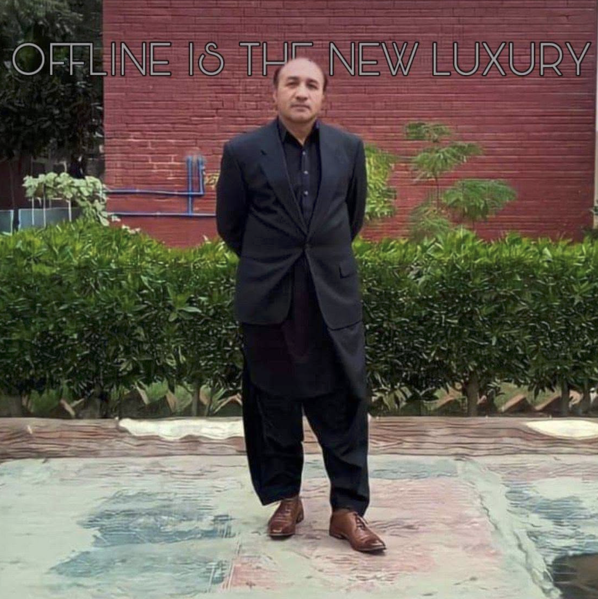

Suspense
Suspense
تصورِ حور اور نیند کی گولی
Tasawwur-e-Hoor Aur Neend Ki GoliWhat begins as a sedative-induced dream beside a mountain river ends near an old canal rest house with forty-year-old secrets.
Suspense fiction, folk mysteries, and audio-ready Urdu scripts crafted with genuine regional atmosphere and believable characters.

Author & Scriptwriter
I write suspense, mystery, and cultural fiction inspired by real places and human nature. From quiet canal banks in South Punjab to roadside tea-stall debates, my goal is to keep readers hooked until the final line.
Whether you need an episodic story for print or an audio script formatted for a YouTube channel, I deliver polished work with natural Urdu phrasing.
Select a format below to see sample work and scope.
Carefully structured plots featuring atmospheric tension, unexpected reveals, and natural dialogue. Ideal for literary magazines, blogs, and serialized digests.

Formatted for YouTube storytellers and podcast narrators. Scripts include voice cues, pauses, and sound effect markers so your voiceover sounds natural and engaging.

Short stories that capture local bus stops, roadside hotels, late-night cassette qawwalis, and lively village debates. Warm, humorous, and relatable.
Click any card to read the complete Urdu text.
Suspense
What begins as a sedative-induced dream beside a mountain river ends near an old canal rest house with forty-year-old secrets.
Satire
A lighthearted look at Ramzan mornings, loud cassette qawwalis, winter barber shop heaters, and village philosophers.
 Chronicle
Chronicle
A real-time account of an intense red dust storm that swallowed the sky at 110 km/h across Muzaffargarh and Multan.
Responses from regular readers on published chapters.


You can contact me directly on the Fiverr Desk with your plot idea, target word count, and delivery deadline. We will finalize the brief before writing starts.
Yes. Voice scripts include narration pacing notes, dramatic breath breaks, and background sound indicators to make voice recording straightforward.
Standard short stories (2,000 to 3,500 words) take between 3 to 5 working days depending on revision requirements.
Drop your email to receive newly published fiction pieces directly.

رات کو سونے سے قبل سر شام سے سکون کی گولی کھا لی تھی کیونکہ اگلے دن ھفتہ وار چھٹی تھی دل میں ایک امنگ سی تھی کہ رات کو ایسے ایسے خوبصورت سپنے دیکھوں جیسے کہ مولانا ٹی جے کی خطابات میں سنائے جاتے ھیں ۔ دنیاوی زندگی تو بیگم صاحبہ کی نگاھوں سے بچ نہیں پاتی تھی سوچا مولانا صاحب کا دامن حور کو پکڑنے ہیں کہ بات بھی بن جائے اور ازدواجی زندگی بھی متاثر نہ ھو ۔
کسی قریبی دوست کے کہنے پر ایک ہفتے سے حوروں کی قربت کے خوابوں کا سلسلہ پہلے سے جاری تھا دل میں مولانا صاحب کے لیے عزت کا رشتہ اور مضبوط سے مضبوط تر ھوتا جا رہا تھا ۔ دن کاٹے سے نہیں کاٹتا تھا ۔ دن میں ٹی جے کی ویڈیو حور کا دور چلتا اور رات مولانا صاحب کی جادوئی دنیا کی سیر میں گزر جاتی ۔
الغرض سرشام سے کھائی ھوئی گولی کا فل اثر رات نو بجے سے سر پر ناچ رہا ھے ایک اور تقریر سن کر اپنے آپ کو مولانا صاحب کی جادوئی دنیا کے حوالے کر دیتا ھوں ۔۔
رات کو پچھلا پہر ھے میں اپنی گاڑی پر ایک ایسے علاقے میں سفر کر رہا ھوں جس کے ایک طرف تاحد نگاہ پہاڑی سلسلہ ھے جس کی فلک بوس چوٹیاں آسمانوں کو چھو رئیں ہیں ۔ دوسری جانب ایک ایسا دریا ھے جس کے پانی کی سطح نہایت بلند ھے اور پانی سے پانی کے ٹکرانے کا شور انسانی کانوں کے پردے پھاڑتا ھوا اپنے سفر پر رواں دواں ھے ۔ اس دریا کا پانی اتنا شفاف ھے کہ اس کے اندر پہاڑی سطح صاف دکھائی دیتی ھے جس میں رنگ برنگے ملبوسات پہن کر کوئی خوب صورت مخلوق اپنی خوبصورتی کے جلوے بکھیرتی ہوئی نظر آ رہی ھے ۔ ان کے خوبرو جوان ادائیں دیکھنے سے تعلق رکھتی ہیں ۔ گیسوں کی بات کی جائے تو سر سے شروع ھو کر پاؤں کو چھوتے نظر آ رہے ہیں۔ آنکھوں کی بات کی جائے تو کسی جھیل کی ماند اتنی گہری کے اس میں ڈوب جانے کو دل چاہیے ۔
جسم کے اتار چڑھاؤ ایسے جیسے کوہ ہمالیہ کی فلک شگاف چوٹیاں
بھرے بھرے جسم کی حدت پانی کا سینہ چیرتی ہوئی آنکھوں کے راستے ڈائرکٹ دل میں اترتی ھوئی محسوس ھو رہی تھی ۔ کسی ایک پر نظرِ رکتی تو دوسرا خوبرو چہرہ اپنی جانب دعوت عشقِ دیتا ھوا نظر آتا ۔ ایسے لگتا تھا کہ فیسں بک کی کوئی REELS دیکھ ریا ھوں ۔ دل کی دھڑکن تیز سے تیز تر ھوتی جا رہی تھی جس کی آواز میں خود سن سکتا تھا ۔ گاڑی مزید آہستہ ھوتی جا رہی ھے ۔ ادھر سے دعوت ملن کی صدا بلند ھوتی ھے جذبات اپنے عروج پر پہنچ جاتے ہیں ملاپ کی بیتابی اپنے نقظہ عروج پر پہنچ جاتی ھے مولانا صاحب کے خواب اور گولی کا اثر اپنی آخری حدوں کو چھو رہا ھے ۔ آخر جذبات عقل پر غالب آتے ہیں اور گاڑی سمیت تیز رفتار شفاف پانی کے دریا میں اپنا سب کچھ قربان کر دیتا ھوں ۔
آج اتوار کے دس بجے ہیں بیگم صاحبہ فون پر ڈاکٹر صاحب کو کہہ رہی ہیں اب ھوش میں آ چکے ہیں اللہ تعالیٰ نے بہت مہربانی فرمائی ھے باقی جو میڈسن آپ نے لکھ کر دیں ہیں وہ جاری رکھے گے ۔
— حصہ دوم —
یہ ڈھلتی ہوئی رات اپنے دامن میں محبت کی ایک المناک کہانی کی چشم دید گواہ تھی۔ یہ ایک انوکھی شادی کی تقریب تھی جس میں اجسام کے ملاپ کی کوئی صورت نظر نہیں آتی تھی۔ شادیانے بجنے کی آواز میں ایک پراسرار سا سوگ طاری تھا ایک غمگین پرسواز آواز نے ایک نغمہ چھیڑا اس گیت کے الفاظ کسی صدیوں پرانی متروک زبان کے تھے جس سے اب کے لوگ ناآشنا تھے۔ اس گیت کے اندر ایک انوکھا سوز اور درد پوشیدہ تھا گیت کے چند الفاظ کی ادائیگی کے بعد ماحول پر ایک مکمل خاموشی سی طاری ھو جاتی مگر اس گیت کے الفاظوں کی بازگشت آسمان پر پھیلے سیاہ بادلوں سے اور بادلوں کے جھرمٹ میں منہ چھپائے چاند ستاروں سے سنائی دیتی مگر اس کے الفاظ اور موسیقی کی دھن اپنے اندر صدیوں کے ارمان غموں اور دکھوں کی سیاہ چادر اوڑھے ہوئے ھوتے۔
کینال ریسٹ ہاؤس کے چوکی دار کی نیم مردہ آنکھیں آب دیکھنے کے قابلِ ھوتی جا رہی تھیں۔ اس کے دماغ میں سب سے پہلا احساس خوشی کے شادیانے بجنے کی آواز سے ھوتا ھے گزرے ہوئے وہ پراسرار واقعات ایک ایک کرکے آس کی آنکھوں کی پردہ سکرین پر نظر آنے لگ جاتے ہیں وہ تیزی کے ساتھ اپنی لاٹھی کو اٹھاتا ھے آپنے دائیں جانب رکھی ھوئی لالٹین کی جانب لپکتا ھے وہ ان آوازوں کی طرف جانے کے لئے نہر کی سائیڈ والے راستے کا انتخاب کرتا ھے اس کے بوڑھے جسم میں نجانے کہاں سے اتنی طاقت آ گی تھی وہ جلدی سے نہر کے کنارے کی جانب بڑھتا ھے نہر کی دوسرے کنارے پر واقع ششم اور کیکر کے پرآنے درخت جھوم جھوم کر نہر کے پانی سے اپنی الفت کا اظہار کرتے ھوئے نظر آ رہے تھے ۔ محبت کا جنوں اب سر پر چڑھ کر بول رہا تھا فطرت اپنے جوبن پر نظر آتی تھی پانی کے شور میں گیت کی آواز شامل ھو کر ایک عجیب سی کیفیت پیدا کر رہی تھی چوکیدار تیزی کے ساتھ اس پرآنے کنویں کی جانب بڑھتا جا رہا تھآ مگر ایک احساس نے اس کے بوڑھے جسم کو جیسے شل سا کر دیا تھا وہ اکیلا نہیں تھا اس کے آس پاس پرآنے سفید لباسوں میں ملبوس بغیر جوتوں کے دس پندرہ لوگ اس کے ہم سفر تھے ان میں سے وہ دو چہروں کو پہچان چکا تھا اور اسی بات نے اس کے بدن کو تقریباً ماوف سا کر دیا تھا وہ ان اشخاص کو جانتا تھا اس کی ملازمت کے دوسرے سال تقریبا 40 سال قبل ان دونوں کی مسخ شدہ لاشیں نہر سے نکالی گئی تھیں ان کے ساتھ کیا ھوا تھا یہ ایک معمہ تھا جس کو کوئی اب تک جان نہیں پایا تھا مگر کچھ لوگ اس خوف ناک واقعات کے امیں تھے مگر کھبی بھی اس سے پردہ اٹھانے پر تیار نظر نہیں آتے تھے۔
اچانک ان میں ایک آدمی کا برف زدہ بے جان سرد ھاتھ چوکیدار کے کندھے پر آتا ھے وہ شخص چوکی دار کو اس پر مسرت شادی کے موقع پر مبارک باد پیش کرتا ھے اور دوسرا آدمی گرتے ہوئے چوکی دار کے ٹھنڈے جسم کو اپنے مردہ جسم کا حصہ بنا کر تھام لیتا ھے۔
جاری ھے...
تحریر: جاوید اقبال

غالباً کلاس نہم میں تھا کہ ماہ رمضان میں روزوں کے دوران سحری کے وقت نواب پور پل اڈا پر ایک نہایت ہی مقدس سا ماحول بن جاتا تھا اس میں عزیز میاں قوال اور نصرت فتح علی خان کی مشہور قوالیاں آواز بلند میں عوام کو سنانے کا خاص اہتمام کیا جاتا دودھ دہی کی دوکان جو کہ ظہورِ مہانہ اور عفور مہانہ چلاتے تھے یہ دوکان سیاسی دور میں پارٹی دفتر بھی بن جاتی ان کے والد صاحب میرے خیال میں ان کا نام منظور تھا وہ اپنی شخصیت اور ذات میں کافی مقبول انسان تھے اور بہت سی اندورنی اور بیرونی خوبیوں کے مالک بھی تھے۔
ساتھ میں ایک مشہور حمام بھی تھا جو عوام کو اپنی اعلیٰ سطح کی کاروباری روحانی و دیگر خدمات سے مستفید کرتا تھا سردیوں کے موسم میں یہاں پر آگ کی انگیٹھی دوکان کے اندر تھی جو کہ آنے والے لوگوں کے جسم اور جذبات دونوں کو ساتھ ساتھ گرم کرتی سونے پہ سہاگا قوالی سے لوگوں کے دلوں کو منور کیا جاتا وہاں پر کام کرنے والے لڑکوں اور اخبار کی سہولت کی بدولت بہت سارے گاہک دو دو بار نہانے کی فرمائش کرکے اپنا غیر قمیتی وقت وہاں گزارتے تھے یہ تو اللہ کا شکر ہے کہ ٹی وی بعد میں آیا ورنہ ان کے شب و روز وہی پر ہی بسر ہوتے۔
"یہ جو ہلکا ہلکا سرور ہے سب تیری نظر کا قصور ہے کہ تو نے شراب پینا سکھا دیا"
اس والی قوالی جو کہ ایک غزل ہے اس کے الفاظ کو مقدس جان کر بار بار دوبارہ لگانے کی فرمائش کی جاتی جس عظیم شخصیت کے ہاتھ میں ٹیپ ریکارڈر کا چارج ہوتا اس کی خاطر مدارت زبانی روحانی و بدنی طور پر کی جاتی۔
قوالی کے الفاظ اہلیان علاقہ کے اندرونی اور بیرونی احساسات وجذبات کو اتنا عروج پر لے جاتے کہ وہ سارا دن اسی احساس و جذبات کو دامنِ گیر کیے ایک خاص قسم کی مستی کی کیفیت میں رہتے جس سے ان کا اور دوسرے لوگوں کا ٹائم بااحسن طریقے سے گذر جاتا۔
باقی پل اڈا پر ایک مسجد موجود تھی جو کہ الحدیث مکاتب فکر کے علماء کے زیر اہتمام و انتظام کام کرتی تھی سر شام گاؤں کی روایات کے مطابق علاقے کے لوگ اپنی اپنی مسلک کی مساجد میں افطاری کے وقت سے پہلے کھانے اور دوسری اقسام کی اشیاء مساجد میں دے آتے جس کی تقسیم کی ذمہ دار فورسزز اپنے حصے کو محفوظ مقام پر منتقل کرنے کے بعد باقی کی افطاری آنے والے روزہ داروں کے لیے چھوڑ دیتی تھیں۔
اور اسکے بعد آنے والے دن کی تیاری پر بات چیت شروع ہوتی اور ساتھ ساتھ لگے ھاتھوں جنت اور دوزخ میں آبادکاروں کی مجموعی تعداد اور اس کے مکینوں کے نام بمہ الاٹمنٹ ایک دوسرے کے سامنے عیاں کیے جاتے مگر اس بات کا خیال رکھا جاتا کہ وہ اپنے ہی گردونواح سے تعلق رکھتے ھوں۔
اور فتویٰ سازی ایک من پسند موضوع ہوتا تھا جس کی زد میں صرف مسلمان ہی آتے۔
تحریر: جاوید اقبال

شام کا وقت قریب آتا جا رہا ھے اچانک سے واٹس ایپ میسج کی ھلکی سی رنگ ھوتی ھے شاید کوئی ضروری میسج ھو ۔ وہ نیند سے جاگتا ھے فون پر آئے ھوئے محسج کو دیکھ کر ایک ویڈیو کو جلدی جلدی لوڈ کرتا ھے ۔
ویڈیو کو دیکھ کر اس کے رونگٹے کھڑے ھو جاتے ہیں ۔ سڑک پر جاتی ھوئی گاڑی کے اندر سے بنائی ھوئی ویڈیو جس میں وہ آسمان کی رنگت جو کہ دن کے وقت خون آلود سی نظر آ رہی ھے ۔ گاڑیاں رک چکیں ہیں اور زور دار آوازیں سنائی دے رہی ہیں۔ وہ موت کی سی تیز رفتاری کے ساتھ انسانوں کی بنائی ھوئی آبادیوں کی جانب آگے بڑھ رہی ھے ۔ جگہ کی بابت دریافت کرنے پر معلوم ھوتا ھے کی دوست Engr Zulqarnain Rasool Qurashi کی گاڑی تونسہ موڑ مظفر گڑھ پر موجود ھے ۔
شام کے 06.40 منٹ پر وہ اپنے بیٹے کو صورتحال بتاتا ھے اور بیٹے کے وہ الفاظ پورے گھر میں گونج جاتے ہیں "پھر تو یہ ملتان کے بہت ہی قریب آ چکا ھے" کمرے کا دروازا بند ھے اور اے سی بھی چل رہا ھے اچانک سے ایک سرخ و سیاہ گہری چادر آسمان پر چھا جاتی ھے روشنی دن میں رات کے اندھیرے میں ڈوب جاتی ھے ۔ فورا سے باھر کے منظر پر نظرِ پڑتی ھے 110 کلومیٹر فی گھنٹہ کی رفتار سے مغربی دباؤ سے سوات خیبرپختونخوا سے چلنے والا مٹی کا طوفان تباہی کی داستانیں رقم کرتا ھوا شہر اولیاء ملتان کے دروازوں پر دستک دے ریا ھے ۔ خوف کی ایک لہر اس کے رگ و جان میں سرایت کر جاتی ھے ۔ ایسا خوفناک سین کہ خدا کی پناہ ۔ ایک خوفناک گڑگڑاہٹ جو کہ بڑی تیزی کے ساتھ قریب سے قریب تر آتی جا رہی تھی ۔ آسمان جیسے لہو سے نہایا ھوا تھا ۔ ایک آگ سی جلتی ھوئی محسوس ھو رہی تھی ۔ ایسے لگتا تھا کہ یہ کالی سیاہ خون آلود آندھی آج سب کچھ اجاڑ کر رکھ دے گی ۔ گڑگڑاہٹ تیزی سے قریب آتی جا رہی ھے شمالی کی طرف سے آنے والا یہ طوفان جیسے ھر چیز کو فنا کر دینے والا ھو آخر یہ خوفناک عفریت اس کے گھر کے درودیوار سے ٹکڑا جاتا ھے ۔ اوپر والی سٹوری پر گھر واقع ھونے کی وجہ سے ملتان شہر کا کارڈ لوجی ھسپتال اور پی ٹی ایل کے ٹاورز جو کہ تھوڑی دیر پہلے کسی پہاڑ کی مانند کھڑے تھے وہ گہرے سیاہ ماحول میں ڈوب جاتے ہیں ۔ تھرڈ فلور پر لگا سولر پینل ایک خوف کی علامت کے طور پر اس کی نظروں کے سامنے آ رھا ھے ۔ یہ اس کے لگنے کے بعد کی پہلی آسمانی افتاد تھی جو آس سے ٹکرانے والی تھی۔ سارا ماحول کسی طلسمی سی قوت کے ھاتھوں حرکت کر رھا ھے ۔ فطرت آج اپنے آپ کو بنا کسی رعایت کے پیش کرتی ھوئی نظر آتی ھے ۔
اچانک ایک بھپرے ھوئے ھوا کے گرداب نے ایک قد آور درخت کو زمین بوس کر دیا ھے درخت کی سسکیاں طوفان کی ہیبت ناک چنگھاڑ میں گم سی جاتی ھے ۔
فطرت کا بے رحم کھیل اب آہستہ آہستہ دور جاتا ھوا محسوس ھوتا ھے ۔ آسمان پر کالی سیاہ خون میں ڈوبی ھوئی گھڑیاں ختم ھونے کے قریب ہیں ۔ روشنی کسی نیک و پاکیزہ روح کی ماند نمودار ھونے لگ گئی ھے ۔ ایسے لگتا ھے کہ کوئی ڈروانہ خواب اپنے اختتام کی جانب رواں دواں ھے ۔
پھر سب کچھ تبدیل ھو جاتا ھے ۔ ظالم نظر آنے والی فطرت پھر سے ایک معصوم پیراہن میں جلوہ گر ھے آیسے لگتا ھے تھوڑی دیر پہلے اس کے اس روپ میں کوئی اور ستم گر تھا ۔
تحریر: جاوید اقبال — ملتان
Malik Tariq Farooq
Multan • Reader